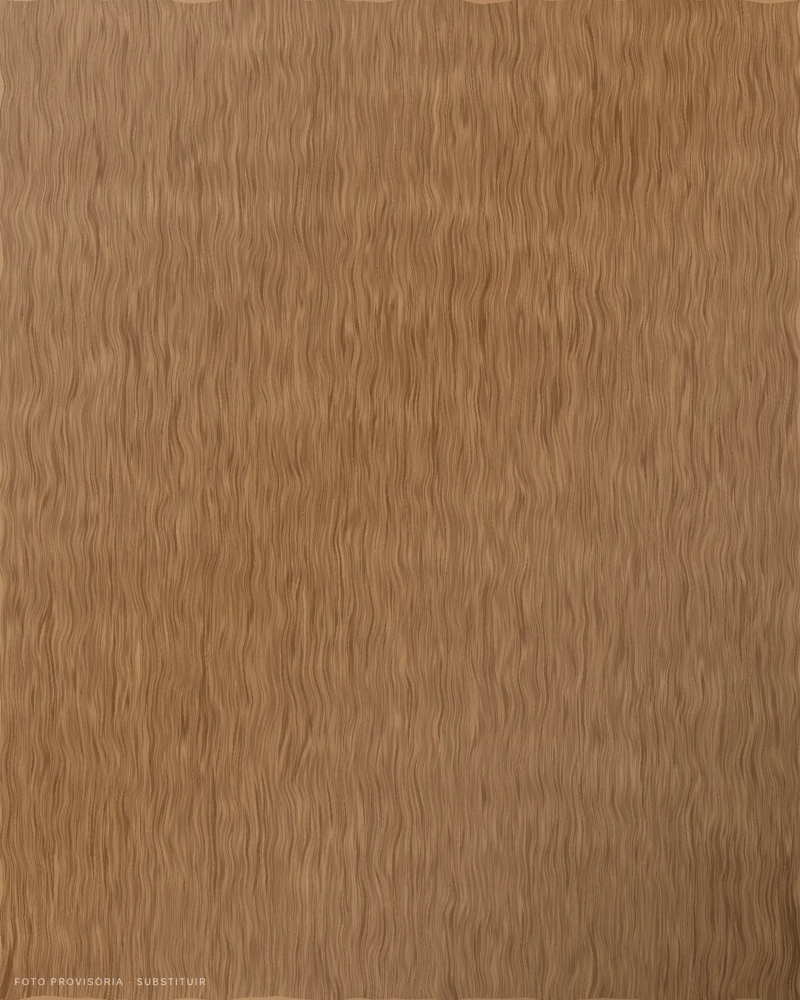
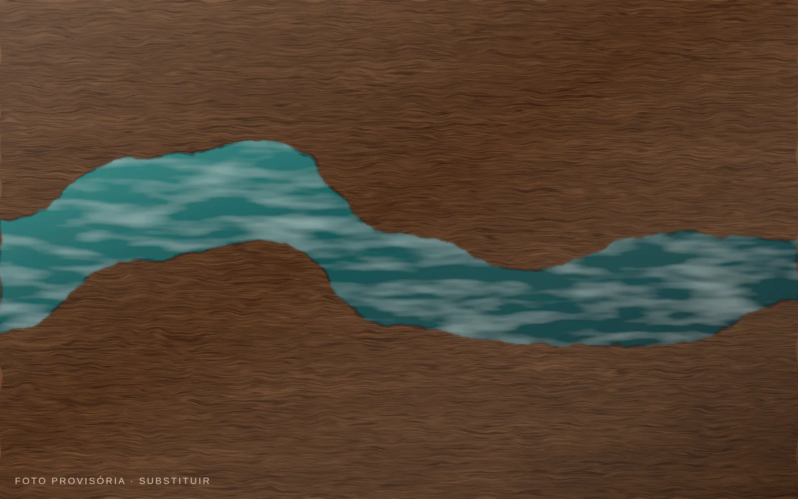
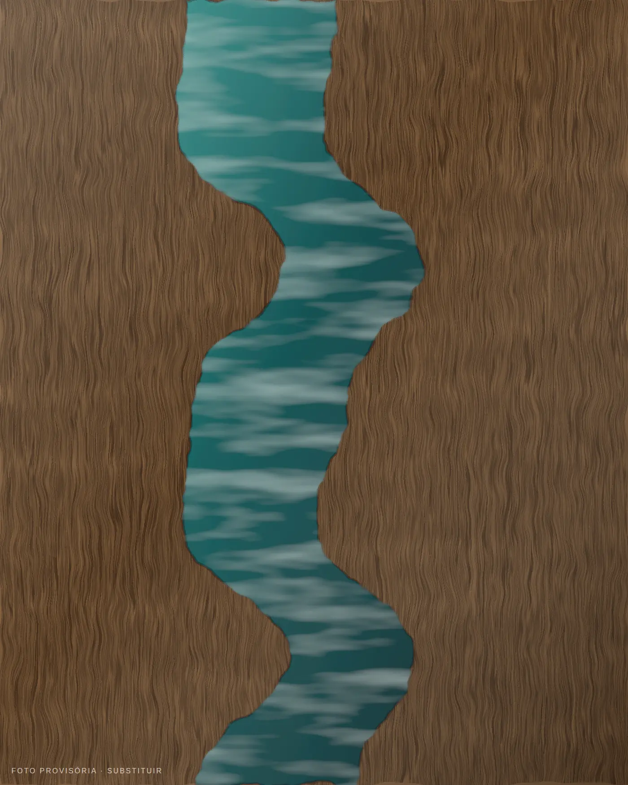

Madeira maciçaO desenho da natureza
A madeira maciça é a protagonista: cada tábua tem seus próprios veios, nós e variações de cor, valorizados pelo acabamento.

Marcenaria artesanal · Aracruz, ES
Madeira maciça transformada em peças únicas — trabalho artesanal, materiais selecionados e acabamento cuidadoso.
A proposta
Cada peça carrega os veios, os tons e o desenho da madeira de onde nasceu. Por isso, nenhuma é igual à outra.
A Made In Juá transforma madeira maciça em peças para a mesa e para a casa: fruteiras, tábuas, gamelas, mesas e móveis sob medida — algumas delas combinadas à resina epóxi.
O que fazemos
Matéria-prima
Dois materiais, um encontro: a força e os veios naturais da madeira com a transparência e a cor da resina.

Madeira maciçaA madeira maciça é a protagonista: cada tábua tem seus próprios veios, nós e variações de cor, valorizados pelo acabamento.

Resina epóxiA resina epóxi preenche fendas e bordas naturais da madeira, criando “rios” de cor que fazem de cada peça um exemplar único.

Feito à mão
Tudo começa na escolha da madeira, observando veios, cor e o potencial de cada peça.
A madeira é cortada, desbastada e modelada à mão até ganhar a forma da peça.
Nas peças com resina, ela é aplicada para preencher fendas e criar os detalhes de cor.
O acabamento cuidadoso deixa a superfície lisa ao toque e realça os veios naturais.
Por que Made In Juá
Peças feitas em madeira maciça, com materiais selecionados.
Cada peça é produzida à mão, com atenção a cada etapa.
Os veios e tons da madeira tornam cada exemplar diferente.
Detalhes em resina que unem madeira e cor de forma original.
Móveis e peças pensados para o seu espaço e o seu uso.
Converse direto com quem faz a peça, pelo WhatsApp.
Galeria

Encomendas
Conte o que você procura — uma peça do catálogo ou algo feito sob medida. A conversa começa pelo WhatsApp.